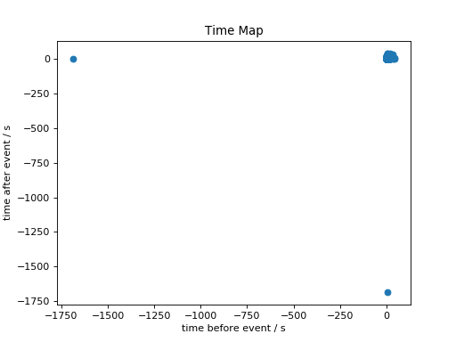

EventList¶
-
class
gammapy.data.EventList(table)[source]¶ Bases:
objectEvent list.
Data format specification: EVENTS extension
Event list data is stored in
table(Table) data member.TODO: merge this class with EventListDataset, which also holds a GTI extension.
The most important reconstructed event parameters are available as the following columns:
TIME- Mission elapsed time (sec)RA,DEC- ICRS system position (deg)ENERGY- Energy (usually MeV for Fermi and TeV for IACTs)
Other optional (columns) that are sometimes useful for high-level analysis:
GLON,GLAT- Galactic coordinates (deg)DETX,DETY- Field of view coordinates (deg)
Note that when reading data for analysis you shouldn’t use those values directly, but access them via properties which create objects of the appropriate class:
Parameters: table :
TableEvent list table
Examples
To load an example H.E.S.S. event list:
>>> from gammapy.data import EventList >>> filename = '$GAMMAPY_EXTRA/test_datasets/unbundled/hess/run_0023037_hard_eventlist.fits.gz' >>> events = EventList.read(filename)
To load an example Fermi-LAT event list (the one corresponding to the 2FHL catalog dataset):
>>> filename = '$GAMMAPY_EXTRA/datasets/fermi_2fhl/2fhl_events.fits.gz' >>> events = EventList.read(filename)
Attributes Summary
altazEvent horizontal sky coordinates ( SkyCoord).energyEvent energies ( Quantity).galacticEvent Galactic sky coordinates ( SkyCoord).observation_dead_time_fractionDead-time fraction (float). observation_live_time_durationLive-time duration in seconds ( Quantity).observation_time_durationObservation time duration in seconds ( Quantity).observatory_earth_locationObservatory location ( EarthLocation).offsetEvent offset from the array pointing position ( Angle).pointing_radecPointing RA / DEC sky coordinates ( SkyCoord).radecEvent RA / DEC sky coordinates ( SkyCoord).timeEvent times ( Time).time_refTime reference ( Time)Methods Summary
add_galactic_columns()Add Galactic coordinate columns to the table. filter_circular_region(region)Create selection mask for event in given circular regions. peek()Summary plots. plot_energy_hist([ax, ebounds])Plot counts as a function of energy. plot_energy_offset([ax])Plot energy dependence as a function of camera offset. plot_image([ax, number_bins])Plot the counts as a function of x and y camera coordinate. plot_image_radec([ax, number_bins])Plot a sky counts image in RADEC coordinate. plot_offset2_distribution([ax, center])Plot offset^2 distribution of the events. plot_offset_hist([ax])Plot counts as a function of camera offset. plot_time([ax])Plots an event rate time curve. plot_time_map([ax])A time map showing for each event the time between the previous and following event. read(filename, **kwargs)Read from FITS file. select_circular_region(region)Select events in circular regions. select_energy(energy_band)Select events in energy band. select_offset(offset_band)Select events in offset band. select_row_subset(row_specifier)Select table row subset. select_sky_box(lon_lim, lat_lim[, frame])Select events in sky box. select_sky_cone(center, radius)Select events in sky circle. select_sky_ring(center, inner_radius, …)Select events in ring region on the sky. select_time(time_interval)Select events in time interval. stack(event_lists, **kwargs)Stack (concatenate) list of event lists. Attributes Documentation
-
galactic¶ Event Galactic sky coordinates (
SkyCoord).Note: uses the
GLONandGLATcolumns. If onlyRAandDECare present use the explicitevent_list.radec.to('galactic')instead.
-
observation_dead_time_fraction¶ Dead-time fraction (float).
Defined as dead-time over observation time.
Dead-time is defined as the time during the observation where the detector didn’t record events: https://en.wikipedia.org/wiki/Dead_time https://adsabs.harvard.edu/abs/2004APh….22..285F
The dead-time fraction is used in the live-time computation, which in turn is used in the exposure and flux computation.
-
observation_live_time_duration¶ Live-time duration in seconds (
Quantity).The dead-time-corrected observation time.
Computed as
t_live = t_observation * (1 - f_dead)wheref_deadis the dead-time fraction.
-
observation_time_duration¶ Observation time duration in seconds (
Quantity).The wall time, including dead-time.
-
observatory_earth_location¶ Observatory location (
EarthLocation).
-
radec¶ Event RA / DEC sky coordinates (
SkyCoord).TODO: the
radecandgalacticproperties should be cached as table columns
-
time¶ Event times (
Time).Notes
Times are automatically converted to 64-bit floats. With 32-bit floats times will be incorrect by a few seconds when e.g. adding them to the reference time.
Methods Documentation
-
add_galactic_columns()[source]¶ Add Galactic coordinate columns to the table.
Adds the following columns to the table if not already present: - “GLON” - Galactic longitude (deg) - “GLAT” - Galactic latitude (deg)
-
filter_circular_region(region)[source]¶ Create selection mask for event in given circular regions.
TODO: Extend to support generic regions
Parameters: region : list of
SkyRegionList of sky regions
Returns: index_array :
np.arrayIndex array of selected events
-
plot_image(ax=None, number_bins=50)[source]¶ Plot the counts as a function of x and y camera coordinate.
TODO: fix the histogramming … this example shows that it’s currently incorrect: gammapy-data-show ~/work/hess-host-analyses/hap-hd-example-files/run023000-023199/run023037/hess_events_023037.fits.gz events -p Maybe we can use the FOVCube class for this with one energy bin. Or add a separate FOVImage class.
-
plot_image_radec(ax=None, number_bins=50)[source]¶ Plot a sky counts image in RADEC coordinate.
TODO: fix the histogramming … this example shows that it’s currently incorrect: gammapy-data-show ~/work/hess-host-analyses/hap-hd-example-files/run023000-023199/run023037/hess_events_023037.fits.gz events -p Maybe we can use the FOVCube class for this with one energy bin. Or add a separate FOVImage class.
-
plot_offset2_distribution(ax=None, center=None, **kwargs)[source]¶ Plot offset^2 distribution of the events.
The distribution shown in this plot is for this quantity:
offset = center.separation(events.radec).deg offset2 = offset ** 2
Note that this method is just for a quicklook plot.
If you want to do computations with the offset or offset^2 values, you can use the line above. As an example, here’s how to compute the 68% event containment radius using
numpy.percentile:import numpy as np r68 = np.percentile(offset, q=68)
Parameters: ax :
Axes(optional)Axes
center :
astropy.coordinates.SkyCoordCenter position for the offset^2 distribution. Default is the observation pointing position.
**kwargs :
Extra keyword arguments are passed to
matplotlib.pyplot.hist.Returns: ax :
AxesAxes
Examples
Load an example event list:
>>> from gammapy.data import EventList >>> filename = '$GAMMAPY_EXTRA/test_datasets/unbundled/hess/run_0023037_hard_eventlist.fits.gz' >>> events = EventList.read(filename)
Plot the offset^2 distribution wrt. the observation pointing position (this is a commonly used plot to check the background spatial distribution):
>>> events.plot_offset2_distribution()
Plot the offset^2 distribution wrt. the Crab pulsar position (this is commonly used to check both the gamma-ray signal and the background spatial distribution):
>>> import numpy as np >>> from astropy.coordinates import SkyCoord >>> center = SkyCoord(83.63307, 22.01449, unit='deg') >>> bins = np.linspace(start=0, stop=0.3 ** 2, num=30) >>> events.plot_offset2_distribution(center=center, bins=bins)
Note how we passed the
binsoption ofmatplotlib.pyplot.histto control the histogram binning, in this case 30 bins ranging from 0 to (0.3 deg)^2.
-
plot_time(ax=None)[source]¶ Plots an event rate time curve.
Parameters: ax :
Axesor NoneAxes
Returns: ax :
AxesAxes
Examples
Plot the rate of the events:
import matplotlib.pyplot as plt from gammapy.data import DataStore ds = DataStore.from_dir('$GAMMAPY_EXTRA/datasets/hess-crab4-hd-hap-prod2') events = ds.obs(obs_id=23523).events events.plot_time_map() plt.show()

-
plot_time_map(ax=None)[source]¶ A time map showing for each event the time between the previous and following event.
The use and implementation are described here: https://districtdatalabs.silvrback.com/time-maps-visualizing-discrete-events-across-many-timescales
Parameters: ax :
Axesor NoneAxes
Returns: ax :
AxesAxes
Examples
Plot a time map of the events:
import matplotlib.pyplot as plt from gammapy.data import DataStore ds = DataStore.from_dir('$GAMMAPY_EXTRA/datasets/hess-crab4-hd-hap-prod2') events = ds.obs(obs_id=23523).events events.plot_time_map() plt.show()

-
classmethod
read(filename, **kwargs)[source]¶ Read from FITS file.
Format specification: EVENTS extension
Parameters: filename :
Path, strFilename
-
select_circular_region(region)[source]¶ Select events in circular regions.
TODO: Extend to support generic regions
Parameters: region :
CircleSkyRegionor list ofCircleSkyRegion(List of) sky region(s)
Returns: event_list :
EventListCopy of event list with selection applied.
-
select_energy(energy_band)[source]¶ Select events in energy band.
Parameters: energy_band :
QuantityEnergy band
[energy_min, energy_max)Returns: event_list :
EventListCopy of event list with selection applied.
Examples
>>> from astropy.units import Quantity >>> from gammapy.data import EventList >>> event_list = EventList.read('events.fits') >>> energy_band = Quantity([1, 20], 'TeV') >>> event_list = event_list.select_energy()
-
select_offset(offset_band)[source]¶ Select events in offset band.
Parameters: offset_band :
Angleoffset band
[offset_min, offset_max)Returns: event_list :
EventListCopy of event list with selection applied.
-
select_row_subset(row_specifier)[source]¶ Select table row subset.
Parameters: row_specifier : slice, int, or array of ints
Specification for rows to select, passed on to
self.table[row_specifier].Returns: event_list :
EventListNew event list with table row subset selected
Examples
Use a boolean mask as
row_specifier:mask = events.table[‘FOO’] > 42 events2 = events.select_row_subset(mask)Use row index array as
row_specifier:idx = np.where(events.table[‘FOO’] > 42)[0] events2 = events.select_row_subset(idx)
-
select_sky_box(lon_lim, lat_lim, frame='icrs')[source]¶ Select events in sky box.
TODO: move
gammapy.catalog.select_sky_boxto gammapy.utils.
-
select_sky_cone(center, radius)[source]¶ Select events in sky circle.
Parameters: center :
SkyCoordSky circle center
radius :
AngleSky circle radius
Returns: event_list :
EventListCopy of event list with selection applied.
{kind=link}
{kind=link}
{kind=link}
{kind=link}